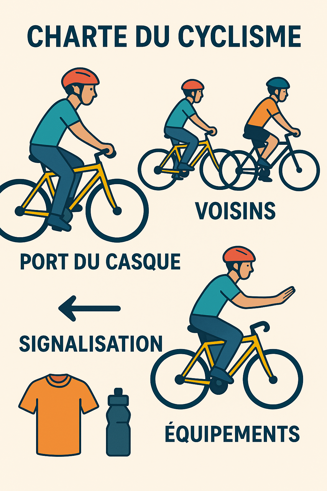

1 – Esprit du cyclisme
- - Le cyclisme est une passion partagée, fondée sur le respect, la solidarité et l’effort collectif.
- - Chaque sortie est une occasion de promouvoir la santé, la convivialité et la découverte.
- - L’identité du club s’ancre dans le patrimoine local et dans la fierté de rouler ensemble.
2 – Respect et sécurité
- - Respecter le code de la route et les règles locales de circulation.
- - Porter un casque homologué et un équipement adapté.
- - Maintenir une attitude responsable : signaler les obstacles, prévenir les changements de direction, rester attentif aux autres usagers.
- - Priorité absolue à la sécurité des plus jeunes et des nouveaux membres.
3 – Esprit d’équipe
- - Encourager et soutenir chaque cycliste, quel que soit son niveau.
- - Favoriser l’entraide en cas de difficulté mécanique ou physique.
- - Valoriser la diversité des pratiques : route, VTT, gravel, cyclotourisme.
4 – Environnement et patrimoine
- - Respecter la nature : ne laisser aucune trace, préserver les chemins et paysages.
- - Mettre en valeur les couleurs, symboles et traditions locales dans nos activités.
- - Participer à des actions de sensibilisation et de protection de l’environnement.
5 – Engagement et exemplarité
- - Être ponctuel et fiable lors des sorties et événements.
- - Promouvoir une image positive du cyclisme auprès du public.
- - S’impliquer dans la vie du club : organisation, animation, transmission aux jeunes.
6 – Festivité et convivialité
- - Célébrer les réussites collectives et individuelles.
- - Organiser des moments festifs (repas, animations).
- - Faire du cyclisme un vecteur de joie et de partage.